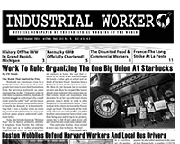

This is the news page for all IWW Departments and Unions. This page displays *all* news items from every Department and Union. To see news only from a particular Department, click on the Department title below.
For an overview of the IWW's Union structure, please visit the Unions homepage.
For branch, campaign, or general labor news, click on the appropriate sub-menu bars at the left under
the main "news" bar.
Submitted on Fri, 08/08/2014 - 2:08pm
 From the IWW - Rio Grande Valley, South Texas
From the IWW - Rio Grande Valley, South Texas
Members and Friends of the IWW: It was decided at the last IWW-RGV (South Texas) General Membership meeting to affiliate ourselves with the Human Rights Coalition of South Texas. This is a declared autonomous group "committed to the dialogue and movement for Human Rights in our Border Communities".
Submitted on Fri, 08/08/2014 - 1:30pm
 At the close of Work People's College Europe, fellow workers show solidarity outside Tegel prison in Berlin with the prisoners union, founded there at the end of May with the involvement of our incarcerated fellow worker Oliver Rast.
At the close of Work People's College Europe, fellow workers show solidarity outside Tegel prison in Berlin with the prisoners union, founded there at the end of May with the involvement of our incarcerated fellow worker Oliver Rast.
The prisoners union needs solidarity now.
Write to the Speakers of the prisoners union:
Speaker: Oliver Rast, Deputy: Attila-Aziz Genc
Seidelstr. 39
13507 Berlin
Germany
Submitted on Wed, 07/23/2014 - 4:27pm
I.W.W. organizer Frank Little was in Butte, Montana, in the summer of 1917, organizing for the OBU after the disastrous Granite Mountain - Speculator Mine fire that killed 168 miners earlier that year. Early in the morning of August First, agents of the Copper Trust forced their way into his rooming house, dragged him out, and lynched him from a railroad trestle. He's buried in a Butte cemetery.
Fellow Workers will meet at Stodden Park in Butte (directions below) at noon on August 2nd for a potluck lunch and to get acquainted or re-acquainted, maybe have a brief organizing meeting; and maybe, if we're so inclined and anyone brings instruments, some music.
Then, after the potluck we'll convoy a mile or so down to the cemetery where FW Little is buried, have a brief ceremony, and hopefully some inspiring soapbox speeches and more music; and if necessary, do a little tidying up around FW Little's gravesite.
All this will be pretty informal, without a formal program or a rigid time schedule.
Remember, this will be a potluck, so bring something to eat, and enough extra to share !
Submitted on Tue, 07/22/2014 - 12:00pm
By Lawrence Goun and Biko Koenig
Workers at Tom Cat Bakery sharpened their resistance against company attacks this summer with a solidarity BBQ in front of the Queens-based factory. Tom Cat's private equity owners, Ancor and Merit Capital, are seeking devastating health care cuts and other takeaways from workers in contract negotiations with the Bakery Union. Dual-card IWW members are leading a struggle to build long-term power and secure a good contract, after beating back a de-certification attempt from a mob-dominated union earlier this year.
“These out-of-town investors already have their mansions, while we barely can support our families. The cuts they're demanding are impossible and we're united against them,” said Marino Aquino, a night-shift packer at Tom Cat and a member of the IWW. “Our unity is our strength and we will keep the pressure on until justice prevails.”
Submitted on Thu, 07/03/2014 - 12:16pm

Headlines:
- Work To Rule: Organizing The One Big Union At Starbucks
- Boston Wobblies Defend Harvard Workers And Local Bus Drivers
- Kentucky GMB Officially Chartered!
Features:
- History Of The IWW In Grand Rapids, Michigan
- The Disunited Food & Commercial Workers
- France: The Long Strike At La Poste
Download a Free PDF of this issue.